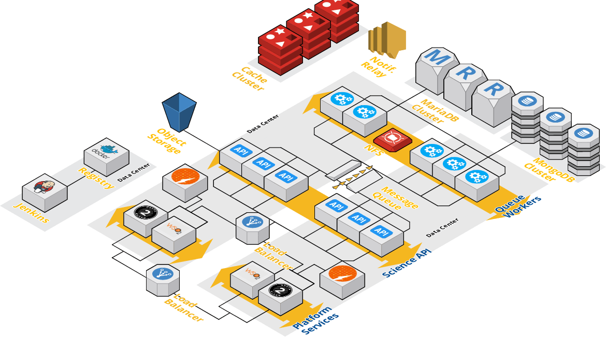

Architecture¶
Overview¶
Agave is designed as a distributed, multi-tenant microservice architecture. Services run in Docker containers and Docker containers. The platform conceptually breaks down into three logical set of components:
What Is the Agave Platform Architecture?¶
Agave’s multi-tenant capability comes from its ability to securely serve multiple tenants from a single deployment of the platform. A tenant is a group of users, usually representing a community or organization, who share access to a common configuration of the platform. Within a tenant, IAM, data, services, documentation, and global default settings are configured for all users. Typically, a single Agave tenant will support tens to hundreds of client applications and thousands of users with no additional configuration.
Individual tenants can be scaled from a minimal sandbox installation to high-availability, shared installation spanning multiple data centers. Figures 1 shows a basic sandbox deployment of the platform. Roughly 50 containers will be started across 3 hosts. One host for platform services, another for core Science APIs, and another for persistence and infrastructure services.

In practice, most tenants do some capacity planning up front, then adjust their static footprint to handle 80-90% of peak throughput at any given moment. Adding additional workers, load balancing the Identity Server, API Manager, and Science APIs, clustering the relational databases, and sharding the nosql server for better capacity and performance are standard steps when operating higher capacity tenants. The architecture in Figure 2 shows a production deployment scaled in this manner across 20+ hosts. With this architecture, upwards of 200 containers would be running at a given time. Given sufficient networking, such a deployment would be capable of moving upwards of a Petabyte of data, managing 100s of thousand of jobs, and serving 10s of millions of requests per day across one or more tenants. It is important to note that while most of these tasks can be automated by the Agave’s Deployer playbooks, local database and system administrators should be included in the process.
How Is Agave Secured?¶
The Agave Platform authenticates users who present credentials, and then authorize them based on their role. Both developers and administrators can be authenticated via a number of means, primarily OAuth tokens and JSON Web Tokens. OAuth tokens are signed with JSON Web Algorithm RS256, which is RSA signature algorithm PKCS#1 v1.5 with SHA-256.
Developers (clients of the system) typically make REST API calls from a client program like the Agave SDK, or to Agave ToGo via their browser, and use OAuth bearer tokens for most communications. Science APIs use service accounts and delegated OAuth tokens. Infrastructure components (like boutique APIs and third party-services) use a token associated with their service account to connect to the API.
At the platform level, API authorization is handled at by the WSO2 API Manager and Identity Server. Every API is assigned a set of scopes. Scopes are restricted to users with a specific role. Roles are bound to users or groups by the user or group identifier. When a user or service account makes an API request, API Manager checks for one or more of the roles assigned to the user for the scope associated with the request before allowing it to continue. Each tenant has a dedicated API Manager
The Science APIs each implement their own layer of roles and permissions relevant to the resources they represent. Access is controlled by making API requests to the individual resources. Platform-wide administrative access can be assigned by granting user accounts the sandbox-services-admin role at the platform level through the Admin services.
TLS Support¶
All internal communication with the Agave Platform are secured with TLS. TLS provides strong encryption, data integrity, and authentication of servers with X.509 server certificates and public key infrastructure. By default, a new internal PKI is created for each deployment of OpenShift Origin. The internal PKI uses 2048 bit RSA keys and SHA-256 signatures. Custom certificates for public hosts are supported as well.
Agave’s auth components use the Java Cryptography Extension (JCE) implementation of crypto/tls. Agave’s load balancer uses openssl version 1.2. The Science APIs also leverage these two implementations for validating token signatures and securing communication between components. The insecure versions SSL 2.0 and SSL 3.0 are unsupported and not available. Cipher suites with deprecated and insecure algorithms such as RC4, 3DES, and MD5 are disabled. Some internal clients (for example, LDAP authentication) have less restrict settings with TLS 1.0 to 1.2 and more cipher suites enabled.
Infrastructure Components¶
Agave’s multi-tenant capability comes from its ability to securely serve multiple tenants from a single deployment of the platform. A tenant is a group of users, usually representing a community or organization, who share access to a common configuration of the platform. Within a tenant, IAM, data, services, documentation, and global default settings are configured for all users. Typically, a single Agave tenant will support tens to hundreds of client applications and thousands of users with no additional configuration.
Agave is implemented and run as a collection of microservices deployed as Docker containers. We use a collection of Ansible playbooks we refer to as the Agave Deployer as the basis for our DevOps approach to continuous integration (CI) and continuous deployment (CD). A Jenkins master-worker cluster powers all of our CI tasks and runs the various Deployer playbooks.
The Deployer contains playbooks to deploy and scale tenants from a minimal sandbox installation to a high-availability, shared installation spanning multiple data centers. Figure 1 shows two ends of the spectrum. The architecture in figure 1b on the left shows the simplest, fully functional deployment of the platform. Roughly 50 containers will be started across 4 hosts. One host for platform services, another for Science APIs, another for Science API workers, and another for infrastructure services.
In practice, most tenants do some capacity planning up front, then adjust their static footprint to handle 80-90% of peak throughput at any given moment. Adding additional workers, load balanc ing the IS, APIM, and Science APIs, clustering the MariaDB database, and sharding the default MongoDB server for better capacity and performance are standard to scale up higher capacity tenants. The architecture in figure 1b shows a production deployment scaled in this manner across 20+ hosts. With this architecture, upwards of 200 containers would be running at a given time. Given suffi cient networking, such a deployment would be capable of moving moving upwards of a Petabyte of data, managing 100s of thousand of jobs, and serving 10s of millions of requests per day across one or more tenants. It is important to note that while most of these tasks can be automated by the Deployer, local database and system administrators should be included in the process.
Platform Services¶
Agave’s Platform Services handle everything associated with de ploying, testing, configuring, and administering a tenant, its APIs, and its users. Earlier we mentioned that a vanilla deployment of Agave results in a base footprint of 20 containers supporting plat form services. Figure 2 illustrates the services those containers represent. Additional support services are also available to handle user signup and password reset, changelog parsing, json parsing and filtering, slack integration, webhook logging, tenant discovery, and cumulative usage reporting.
Identity Management¶
Agave uses the WSO2 Identity Server (IS) to handle identity management and provide a proven, standards compliant, enterprise ready OAuth2 server. By default, a lightweight IS bundled with the WSO2 API Manager (APIM) is used. This is sufficient for most use cases. For high availability deployments and in situations where tenants require advanced identity and/or fed eration scenarios including OpenID Connect (OIDC), SAML, and social login, the IS is deployed as a standalone component. Both the bundled and standalone IS support a wide range of popular identity providers (IdP) out of the box including LDAP, Ac tive Directory, OIDC, and custom database schema. Basic attribute mappings as well as custom groups and roles can be mapped from an IdP to Agave user roles as needed. This is true whether Agave is given write access to the IdP or configured as a readonly client. A custom REST API is also included to enable basic search and, when enabled, CRUD operations on user profiles.
API Management¶
Agave uses the WSO2 API Manager (APIM) as the default API Management service and API Gateway. This brings security, rate limiting, analytics, access control, and full OAuth2 protection to the Science APIs as well as any other custom API added by stakeholders or users. When combined with APIM’s data mediation features, organizations have a clear path to modernize their legacy infrastructure by publishing their existing SOAP services, static data sources, and other data sources as RESTful JSON APIs without altering the original code base.
Admin APIs¶
Every tenant has a set of Admin APIs to allow programmatic access to create and manage roles, service accounts, API clients, and register and version APIs. Through these Admin APIs, tenant owners can fully configure and manage their tenant from the Agave tooling, or any client application that can make HTTP calls.
Functions-as-a-Service (FaaS)¶
Tenants with FaaS use cases can add Agave’s serverless component, [Abaco](http://useabaco.cloud), to their deployment architecture. Abaco is an open source, serverless solution that uses Linux containers and the Actor model of concurrent computing to implement FaaS. When deployed, Abaco will appear as a custom API in the platform. New functions are implemented as Docker images and registered by making a POST request to the API. Abaco handles image fetching, caching, container execution, monitoring, data management, and provenance internally. A permission model consistent with the Science APIs enables sharing and publishing of individual functions. Actors enable native interactions with other Agave services by injecting delegated bearer tokens into every container and creating events available for subscription through Agave’s Notifications API.
Science APIs¶
At the heart of Agave is a battle-tested collection of REST APIs which underpin every other part of the Platform and provide the ScaaS functionality for which the platform is known. A key feature of the Science APIs is their understanding and implicit handling of the concerns common to computational science. Things like automated job output archiving, dynamic subscriptions to events, automated metadata validation, deep provenance tracking, and cascading permission grants allow users to skip much of the plumbing otherwise required to efficiently implement features like searchable job histories, push notifications, attribution statistics, and reliable data replication in their applications.
The Science APIs are implemented as a collection of message-driven, asynchronous micro services. Each micro service is built, tested, tagged and published as a publicly available image in the Docker Public Registry by a single, vanilla Jenkins server in response to notifications from the API’s git repository. By shipping each microservice as a separate container, the platform can better leverage contributions from the open source community, play to the strengths of internal developers with different skill sets, manage multiple API versions, and elastically scale independent containers to meet capacity and hybrid deployment requirements.
Metadata API¶
The Metadata API allows users to manage metadata and associate it with Agave entities via associated UUIDs. It is backed by MongoDB and supports a JSON schema to define and validate structured JSON metadata; it also accepts any valid JSON-formatted metadata or plain text string when no schema is specified. As with other Agave APIs, a full access control layer is available, enabling users to keep metadata private or share it with colleagues.
Monitors API¶
The Monitors API provides a familiar paradigm for monitoring the usability and accessibility of storage and execution systems registered with Agave. Similar to services like Pingdom, Pagerduty, and WebCron, the Monitors API allows users to schedule regular health checks on a registered system. Unlike standard uptime services, Agave will check that the system is responsive and accessible by checking availability (ping), accessibility (authentication), and functionality (listing or echo). Each check result is persisted and the history and is queryable through the API. As with all resources in the Agave Platform, a full event model is available so the user can subscribe to the events such as failed checks, restored system availability, and system disablement. An option to automatically enabling or disabling the system based upon the results of a check is also available.
Notifications API¶
The Notifications API is the primary mechanism by which consumers create and manage event subscriptions within a tenant. A typical use case is a user subscribing for a slack notification when her job completes, a text message when a permission changes on a shared file, or a webhook callback when an app definition is updated.
Notifications can be single use, or persistent and have a per-use retry policy built in. In situations where notifications cannot be delivered, a dead letter queue is available so users can query for messages they may have missed.
PostIts API¶
The PostIts API is a URL shortening service similar to bit.ly and goo.gl. It allows users to create pre-authenticated, disposable URLs to any resource to which they have access within the platform. The lifetime, number of uses, request method, and the URL can be configured. PostIts can be manually refreshed or expired at any time. As with all Science API resources, a full set of events is available to track usage and integrate the lifecycle of a PostIt into external applications.
The most common use of PostIts is to create single use, short-lived URLs to protected files and metadata that can be sent to colleagues or provided to a third-party service. For example, using the PostIts service, one could share the output(s) of an experimental run, distribute materials for a class, or serve up assets for a website like, Agave ToGo.
Other use cases for PostIts include creating “drop” folders to which anyone with the link can upload data, allowing a job to be reproducibly rerun for peer review, publishing metadata for public consumption, publishing a canonical reference to a user profile, and passing short-lived URL into a job to enable pre-authenticated API access from within a running job. The possibilities go on and on.
Profiles API¶
The Profiles API is a hosted identity service providing organizations a way to create and manage user accounts within their Agave tenant. The service is backed by an OpenLDAP server, usually clustered for high availability. Tenants configured for Agave to use their organization’s existing, on-premise identity solution have the option of allowing the Profiles API to create, edit, and delete user accounts in addition to providing read access. As with many commercial identity providers, the Profiles service provides the means to interact with what can often be complicated backend identity solutions in a secure, technology agnostic way. This shields the details of the identity solution from consumers while providing them a secure, convenient way to obtain the basic information needed for meaningful collaboration.
Realtime API¶
The Realtime API provides websocket connections to Agave’s event stream for a user, resource, or tenant. No buffering or retry efforts are made if the consumer disappears. Streams are, however, persistent, so a dropped client can reconnect to a predefined stream at any time.
Stats API¶
The Stats API provides statistical usage information about API resources, clients, and tenants. Responses from the Stats API can easily be fed into the Metadata API as a way to create and save daily usage reports, or given as the input to a popular graphing package like Google Charts, Flot Charts, Plotly, or Matplotlib to build a custom dashboard.
Systems API¶
A “system” in Agave represents a physical, virtual, or digital resource that stores data and/or runs code. Systems are identified and referenced in Agave by a unique ID unrelated to their ip address or hostname. Because of this, a single physical system may be registered multiple times. This allows multiple users to configure and use a single shared resource, such as an HPC cluster, in the way(s) that best meet their individual needs.
Systems support the definition of virtual root and/or home directories. When defined, Agave will resolve all requests for absolute paths relative to the virtual root directory, and resolve all requests for relative paths relative to the virtual home directory. This allows multiple users to register a single physical system or cloud service as multiple Agave systems, each with a root directory pointing to a different folder, and maintain total data isolation within the platform.
Systems come in two flavors: storage and execution. Storage systems are only used for storing and interacting with data. Execution systems are used for running apps (a.k.a. jobs or batch jobs) as well as storing and interacting with data. All systems require some basic data connectivity information including hostname, port, account, authentication details, and protocol. Agave currently supports FTP, SFTP, GridFTP, S3, and iRODS data protocols. Swift, WebDav, Dropbox, and Box are currenty in development.
Execution systems require additional login information to connect to the remote system and launch an app. SSH, GSI, OpenSSH, and Local access methods are supported as well as tunneling through a proxy server. Once connected, Agave needs to know how to invoke the app code. The type of execution dictates which, if any, scheduler should be used. LSF, LoadLeveler, PBS, Open Grid Engine, CondorHT, Torque, Moab, SLURM, and Condor are all supported in additional to standard forked execution.
The Systems API gives users the ability to create and discover storage and execution systems for use in the rest of the Science APIs. Newly registered systems are private to the user by default. Systems can be shared with one or more users through role assignment and published into the public space by administrators. Larger tenants commonly publish one or more storage systems to provide free cloud storage and execution services to all their users.
Tags API¶
The Tags API provides free form tagging of any resolvable resource in the platform. Tags work like metadata, but unlike the Metadata API, tag names must be unique for a given user or group.
Tenants API¶
The Tenants API is a readonly information service providing a single discovery point to find known tenants and their configuration information. For on-premise deployments, the local tenant service is where white-labeled Agave tooling for individual tenants look to discover URLs for registration, authentication, and Science APIs.
Transfers API¶
The Transfers API picks up where the Files API leaves off by providing managed, multi protocol file transfers. Data may be moved between any Agave systems and pushed/pulled from URI with supported schemata. The Transfer API manages all data movement in the platform, so in addition to providing a REST interface to schedule and query transfers, it is also the interface to query transfer history of job inputs and outputs, published app assets, and PostIt redemptions.
Transforms API¶
The Transforms API handles transformation of data between known formats. The supported file types are configured on a tenant by tenant basis and can be discovered by querying the transforms service. Transformations may be made as part of a file transfer, an asynchronous request on existing data at rest, or synchronously as part of a file download. A full event model is available to track the transformation progress.
UUID API¶
The UUID API resolves the type and representation of one or more Agave UUIDs. This is helpful when you need to expand the hypermedia response of a resource, get the URL corresponding to a UUID, or fetch the representations of multiple resources in a single request.
Persistence¶
Agave uses both SQL and NoSQL databases to persist data for the Platform and on behalf of users. The default sandbox deployment will run all the databases in separate containers, on a single host. Volume mounts will be used to ensure data retains between container restarts. In a production setting, the database components should be split off into separate hosts and clustered for high availability. The Deployer includes playbooks to handle both scenarios, though a database administrator should be enlisted to ensure that your databases are properly tuned for your specific situation.
MySQL Databases¶
Agave’s utilizes MySQL databases to back the Auth components and Science APIs. While both tiers could use a single MySQL server, independent MySQL servers are deployed by default. This allows each database to be independently tuned for its use case and provides separation of concerns when creating and restoring backups and running migrations.
MongoDB Databases¶
Within the Science APIs, the Metadata service utilizes a MongoDB database to store user-provided metadata, failed notifications, and JSON Schema definitions. The MongoDB server has several indexes in place to enable full text search, fast key searching, and efficient aggregation operations over the custom fields Agave injects into every document in the Metadata and Schema collections.
Queues¶
Agave uses a message queue to manage events and efficiently distribute work to backend processes. beanstalkd is the default queue and is sufficient to handle significant load on multiple tenants. One drawback of beanstalkd is that it does not scale beyond a single host, so once the load outgrows a single host, it is best to switch to a queue that does cluster, such as RabbitMQ or IronMQ. Both can be swapped out with a simple configuration change, and both scale well past the needs of Agave.
Web¶
Agave provides a rich set of tooling to help onboard users and make integration easier for new and existing applications. The command line interface (CLI) provides a convenient way to leverage Agave from existing scripts and terminal environments. Client software development kits (SDK) in Java, PHP, Python, R, AngularJS, and Node provide light wrappers around Agave’s REST API and enable programmatic integration into third-party applications.
Agave ToGo¶
Agave ToGo is the reference science gateway for the Agave Platform. ToGo was designed to be both functional and informative. Two implementations of ToGo are currently available. The version you select largely depends upon your target audience.
Static client-side implementation¶
The client-side version of ToGo is a responsive single page web application written in AngularJS the draws its entire functionality from the Agave Platform. New projects can fork the app’s Github repository into their own and have a fully functional science gateway hosted directly out of Github Pages. Alternatively, they can upload it to a CDN like cloudflair or Akamai, and have a first-class web appliation for their project that scales horizontally and requires no maintenance.
ToGo provides clean implementation of many real world use cases that developers can reference when building their own applications. For AngularJS and Angular 2+ applications, entire modules can be imported and used as-is. Other projects can repurpose the relevant code for their own purposes. Either way, the savings in time and effort ToGo adds to integration efforts is signifcant.
Server-side implementation¶
The server-side version of ToGo is a PHP application written in the Laravel Framework. It provides an identical user-facing interface as the client-side version of ToGo, but provides several significant features that make it attractive to larger groups and projects in need of advanced functionality and deeper integrations with third-party services.
- Service-level “Community” accounts are supported out of the box. Administrators can create private Agave systems, automate and meter access based on user groups created in the admin area.
- Webhooks from the Agave Platform are processed out of the box and forwarded to the UI as realtime notifications. A lightweight event listener is available to create custom actions, send additional notifications, or filter/broadcast the incoming messages as needed.
- Response caching, template rendering, and response mediation are in place to speed up the UI.
- Additional access control is in place to control application registration, map user accounts, manage Agave token refresh, and provide extended profile information.
Note
Additional server-side implementations of ToGo are under development. If you have a specific need, please reach out to the Agave team to share your use case. Your feedback helps us prioritize our roadmap.
Jupyter and RStudio¶
Agave also provides deep integrations into both Jupyter and RStudio notebook servers by providing Docker images of each server with preconfigured authentication
Microsites¶
A growing trend for large organizations and small labs is the deployment of smaller, single-purpose applications called Microsites. Like their web service counterparts, microservices, microsites are single-paged web applications that providing a single, task-oriented experience to the user. Common use cases for microsites are job submission sites tailored for a single code, data transfer sites to schedule and move data, ETL (extract, transform, and load) applications for importing and scrubbing datasets, chat and messaging sites, and publication sites to control the release, approval, and publication of data. While the Agave ToGo web application can, and in some cases already does solve these use cases, ToGo can feel like overkill when the use case is simply to enable a single task. In those situations, we recommend Agave ToGo Microsites. Agave ToGo Microsites are single-purpose, single-page web applications that satisfy the basic need of many projects to run code, collaborate, and share results. Each instance is self-configurable, comes bundled with multiple theme and style options, has an optional backend server, and comes with devops tooling built in.
Developer Documentation¶
The Agave developer documentation is available for deployment
Web Services¶
Several user facing web applications and convenience services are available as optional components.
JSON Mirror API¶
The JSON Mirror REST API is a service for formatting and querying JSON data. It provides basic JSON selection support of both objects and arrays using standard JSON dot notation syntax with optional pretty printing. The Agave CLI can use JSON Mirror as the default JSON parser in situations where Python and JQ are not available.
Changelog API¶
The Changelog Parser REST API is a service for parsing textual changelog files and presenting them as a structured JSON object. The changelog API is used by several of the web applications to display information about the latest updates to the platform and the applications themselves.
Core Concepts¶
Introduction¶
This section refers to the deploy directory which contains scripts and other files used for deploying components of Agave.
Deployment is accomplished with Ansible playbooks; Ansible 2.0+ is required. We recommend `installing and running from source`_.
(When running from source, make sure you activate the Ansible environment).
Note
A docker image containing all deployment files from this repository as well as the required version of Ansible is now
available from the docker hub. The image is agaveplatform/deployer and image tags correspond to tags in this repository.
The image will be kept up to date as changes are made. We highly recommend using the image instead of trying to run from source.
Why Should I Use The Agave Platform?¶
| I am a… | Links to relevant topics |
|---|---|
| Scientist | Agave ToGo |
| Developer | Developer Documentation |
| System Administrator | `Setting up a Sandbox`_ |